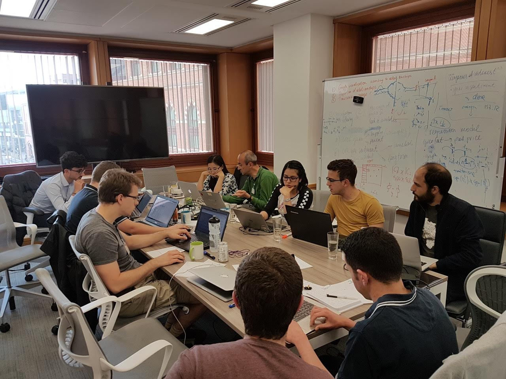

ATI Data study group
I had the opportunity to attend the Alan Turing Institute (ATI) Data Study Group (22nd-26th May 2017). The ATI is the national institute for data science and as such, it has strong ties to both academia and industry.
The event was a week long data hackathon in which multiple groups used their best skills to crack the various projects proposed by the industrial partners. Over 5 days 6 groups worked intensively to deliver feasible solutions to the problems proposed.
The projects
The projects spanned over a wide range of topics, each with their very unique challenges and requirements.
- DSTL presented two projects: the first of which was aimed at cyber security, thus trying to identify malicious attacks from IP's traffic data. The second project was focused on the identification of places/geographical landmarks so that the team could predict the likelihood of a given event to take place at a given location.
- HSBC's challenge consisted in not the study of a particular data set(s) as the rest of the problems, but was in fact based on the development of a synthetic dataset that could be used along with some algorithms to evaluate the users' behaviour.
- Siemens' project was centred around the study of vehicle traffic data that would enable efficient traffic lights and traffic volume control, which would eventually lead to the reduction of carbon emissions.
- Samsung, being one of the leaders in the smartphones industry decided on using their collected (anonymous) users' data to analyse the users' gaming behaviour (e.g. which games would you biuy/play based on your current gaming habits) as well as developing a gaming recommendation engine.
- Thomson Reuters's challenge was centred around graph analysis. Such a project had as primary goal to identify how positive/negative news of a given company affect other companies/industries within their network and how far does this effect extend.
The Hack
I joined the Thomson Reuters' project as this seemed to be one of the projects with the richest data set, both in its extension and type (e.g news, sentiment analysis, stock market, time series, etc.). The team was formed by 13 people with a huge variety of skills and coming from totally different backgrounds, which is what makes hackathons so exciting. You have to make the most of the skill sets your team has, in a very limited amount of time... pushing you out of your comfort zone.

After a brief team introduction our 3 Thomson Reuters facilitators described the data and the challenge in more detail. We then identified the main goals of the project and subdivided the team in about other 4 teams. Once the initial planning was completed, we spent Monday's evening through Wednesday morning learning about their various API's, getting the data, wrangling data... and getting more data.
We soon realised that analysing all the data was incredibly complex and of course, there was not one correct way to do it. So we had to reduce the scope of the data we were in fact going to use and the sort of features/phenomena we were interested in.
The rest of the Wednesday and Thursday were used to start doing some prediction and regression on the data as well as writing up the report and finishing off our pitch presentation.

The findings
Certainly, we were able to obtain loads of insight from our data and the various algorithms we used. Some of the most important expected and unexpected findings were:
- Negative news have a longer impact on the companies involved and those within their network (20 days as opposed to a 4 days impact from the positive news)
- The companies are related to each other based on whether their are affiliates, competitors, parents, etc., not surprisingly the competitors are the companies that have the biggest effect on the other companies' stock prices
- Different types of industries react differently to negative/positive news and the degree of extension of such an impact varies considerably from one industry type to another
Taking home
As every time I have been to a hackathon of some sort I ended up feeling absolutely drained, but accomplished at the same time. Hacks are such a good opportunity to meet like minded people, learn loads of stuff, test yourself, and have fun.
Would I encourage people to go to one of these events? Absolutely! If you are interested in all things data science you should keep an eye on the future events by the Alan Turing Institute. If you only want to have a go at hacking for fun, for a cause, or to meet new people I would suggest you have a look at the Major League Hacking. I am sure you will be able to find something near you and for all sort of interests. Our guys at Hack Sheffield organise a hackathon once a year so you might want to keep an eye on their activities. For those around Manchester area check out Hac100 including the youth and junior hacks (formerly Hack Manchester).
Will the RSE team at the university of Sheffield organise hacks? We have a crazy amount of work on our plates at the moment but we are definitely interested in (co)organising hackathons and many other events throughout the year. So keep your eyes peeled!